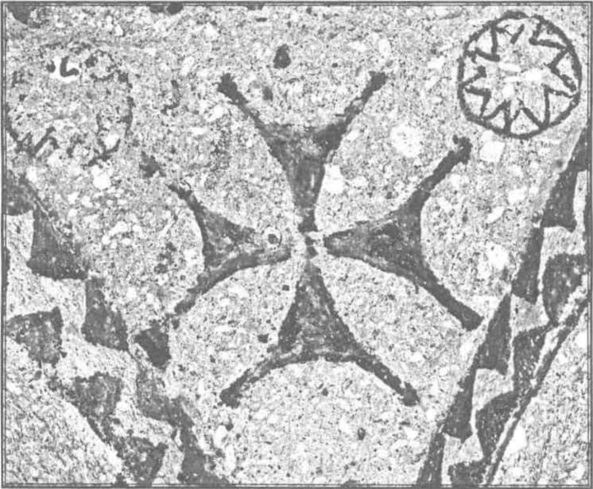
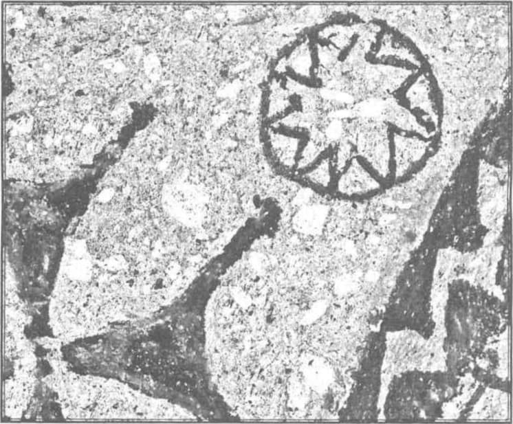

În analiza problemei divinității, am stabilit două caractere particulare ale acestei realități: existența absolută și activitatea, acțiunea continuă și necondiționată.
În opozițiune cu existența absolută și cu acțiunea continuă, caractere pe care noi le stabileam ca fiind nu cunoscute propriu-zis, ci revelate, se creează în conștiința religioasă individuală două situațiuni pe care le aminteam ieri, denumindu-le: unul, sentimentul nimicniciei personale, și al doilea, sentimentul creațiunii, adică omul se simte mic și mărginit în fața lui Dumnezeu și omul se simte creat de către Dumnezeu. Aceasta ar fi, vasăzică, un fel de corelat obiectiv individual al celor două caractere fundamentale ale divinității, reacțiune care este provocată propriu-zis nu de voința individului, ci este pur și simplu un caracter al constituirii, al facturii divinității. Aceasta dă propriu-zis caracterul conștiinței religioase, și sentimentul acesta al nimicniciei, ca și sentimentul de dependență continuă nu sunt rezultat al unei cunoașteri a noastră, nu sunt pur și simplu stări de conștiință pe care noi le trăim, nu sunt puncte de plecare pentru un eventual raționament sau deducțiune a noastră, ci sunt stări trăite, ca reflexe ale unei stări interioare trăite, care este trăirea pură și simplă a lui Dumnezeu. Acum, este evident că și sentimentul acesta de nimicnicie, ca și sentimentul dependenței continue, nu sunt pe același plan de realități, nici nu sunt concomitente, în legătura aceasta de la om la Dumnezeu, adică atunci când individul trăiește divinitatea, primul sentiment este acela al nimicniciei. Vasăzică, în primul rând se face opoziție între existența relativă, individul, și existența absolută, Dumnezeu; ens a se, Dumnezeu, cum spune metafizica, ens ab alio, individul, contingența. Numai în momentul când acest caracter, ens ab alio, devine conștiință pentru individ, numai atunci intervine și cea de-a doua situație psihologică religioasă, aceea a sentimentului de creație. Propriu-zis, sentimentul de creație, aș spune mai exact încă, se naște în momentul în care se precizează conștiința relativității noastre, pentru că ens ab alio și dependența sunt unul și același lucru; dar vedeți că genetic este absolut necesar ca conștiința dependenței mele să urmeze conștiinței independenței existenței absolute. Aceasta este, prin urmare, gradarea — aș zice — pe care o urmează aceste două sentimente fundamentale. Se înțelege, desigur, în ce spirit întrebuințez cuvântul „sentiment“ aci: două stări, două structuri fundamentale, care caracterizează fața subiectivă a actului religios.

Sentimentul de creatură
Sentimentul de a fi creatură, sentimentul de creatură poate să aibă două origini: eu stârnesc întotdeauna asupra laturei metafizice și asupra laturei religioase a chestiunii, în latura metafizică se poate spune: se poate ajunge la convingerea, pe cale rațională sau cu ajutorul unei deducțiuni oarecare, că ceea ce există în realitate trebuie să aibă o cauză; că, adică, și metafizica vorbește de o cauză primă, care este regula oricărei deveniri sau a oricărei existențe. Am stăruit de multe ori asupra faptului că se găsește în Aristotel afirmat, pentru prima oară, că este permisă o urcare înapoi în seria cauzală numai atâta timp cât poate să fie vorba de devenire, dar că nu este permisă o urcare în seria cauzală atunci când nu mai este vorba de devenire, ci de existență. Adică, Aristotel spunea: cauzalitatea este funcțiune categorială a schimbării, a devenirii, nu a existenței. Prin urmare, zice Aristotel: poți să te întrebi întotdeauna care este cauza acestei întâmplări, nu poți să te întrebi niciodată care este cauza lui Dumnezeu, pentru că Dumnezeu nu este dependență, ci este existență absolută, existență propriu-zisă. Zic, deci: și în metafizică se vorbește de această înlănțuire cauzală a fenomenelor, dar această înlănțuire cauzală a fenomenelor nu duce, propriu-zis, la sentimentul de creatură, la convingerea de creatură; adică, în ordinea logică, în ordinea obiectivă, succesiunea și ordonarea în timp și spațiu a fenomenelor stabilesc anumite relațiuni precise între două fenomene, care relațiuni precise, însă, privesc mai mult legătura exterioară a fenomenelor decât dinamica transformărilor din realitate. Adică, unui fenomen A îi urmează un fenomen B. Dar ce legătură este între fenomenele A și B, esențială, în afară de faptul că ele se urmează după o anumită ordine fixă, în timp și spațiu, nu poate să spună metafizica și nici nu o spune. Metafizica nu trăiește realitatea, ci răsfrânge oarecum această realitate.
Revelația
Sentimentul de creatură, prin urmare, chiar dacă poate să fie fundat metafizic pe conștiința relațiunii de creatură a omului și Creator, nu poate să fie dat propriu-zis printr-un act de cunoaștere metafizică, ci presupune necesară altfel de cunoaștere, să zicem religioasă, adică presupune revelația.
Despre revelație am vorbit noi și știți ce însemnează această cunoaștere a revelației; în actul obișnuit de cunoaștere noi luăm în stăpânire realitatea externă printr-o raportare de la mine la obiect, adică punem stăpânire asupra unui obiect ieșind din noi înșine printr-un act de voință. Orice va spune Biserica de Apus în această privință, lucrurile așa stau.
Vasăzică, actul obișnuit de cunoaștere este un act de voință, este o ieșire din noi înșine, o intenționare obiectivă — o spune și scolastica —, în afară de mine, pe câtă vreme revelația presupune ca activ obiectul care trebuie să fie cunoscut, și ca pasiv subiectul care cunoaște; adică, în actul de revelație obiectul cunoașterii se descoperă oarecum subiectului, se dă prin a lui inițiativă. Prin urmare, cunoașterea se coboară asupra noastră, nu ieșim din noi înșine pentru ca să prindem obiectul care trebuie cunoscut, nu punem noi stăpânire pe obiect, ci dimpotrivă, noi suntem stăpâniți de acel obiect din afară de noi, iar noi nu facem decât să îndeplinim o operație pe care acel obiect de cunoștință al nostru ne-o îngăduie. Prin urmare, revelația este o întrepătrundere a celor doi termeni ai raportului, în cunoașterea obișnuită este pur și simplu o punere de posesie a subiectului asupra obiectului.
Deci, în actul cunoașterii obișnuite, obiectul este pasiv, subiectul activ; în actul revelației este activ obiectul și aproape pasiv subiectul. Evident, aproape pasiv, întrucât pentru actul revelației se cere o anumită stare spirituală deosebită; pentru revelație nu este pregătit în fiecare moment tot omul, revelația se întâmplă în anumit timp potrivit. Tocmai din faptul istoric că revelația este un fenomen perpetuu se deduce și caracterul special al celor doi termeni puși în prezență: ambii termeni să fie într-o situație propice, deci de ia ambii termeni se cere o anumită activitate.
Prin urmare, nu este exact că în actul revelației, cum spune o anumită mistică, subiectul este absolut pasiv; adică, pura contemplație, pura stare de receptivitate nu face posibilă revelația, pentru că această stare poate fi înțeleasă, la urma urmelor, ca fiind perpetuu existentă. Noi în fiecare moment putem să fim în pasivitate, dar nu în fiecare moment, în viața conștiinței individuale, suntem pasibili de receptivitatea aceasta, de revelație.
Aceasta este, prin urmare, distincțiunea în procesul revelației și numai în acest proces este dată, în adevăr, legătura dintre Creator și creatură. Pentru că numai în acest proces al revelației — al intuiției directe și al intuiției absolute — obiectul și subiectul se întrepătrund, în procesul celălalt, de cunoaștere științifică, obiectul și subiectul rămân ipostaze deosebite ale realității; ele se ating oarecum numai superficial, intră într-un raport constant, dar în ceea ce privește apariția lor în lumea realității sensibile ele nu intră într-o legătură intimă și esențială. Dacă acea cauzalitate științifică, precum spuneam, este stabilită în raporturi exterioare, de ordonare în timp și spațiu, și dacă legătura Creator — creatură este ceva mai mult, este răsfrângerea, trădarea unei legături esențiale, intime între cei doi termeni, atunci, evident, raportul Creator — creatură nu poate să fie dat în cunoașterea științifică; se cere această stare specială a cunoașterii religioase, revelația, care, hotărât, mai mult decât cunoașterea științifică, este pasibilă de a îndeplini funcțiunea aceasta de cunoștință simbolică a realității. Creator și creatură stau într-un raport de cauzalitate simbolică pentru religie. Creator — creatură, cauză — efect stau într-un raport de cauzalitate obiectivă pentru știință, dar sentimentul de creatură este întotdeauna întovărășit de conștiința sau structura spirituală care trădează o relație simbolică, adică creatura se simte întotdeauna ca fiind semn, simbol pentru Creator. Am repetat lucrul acesta pentru că este de o mare importanță.
Categoria sanctității
Categoria existenței absolute, ca și categoria existenței relative, incontestabil se leagă, în viața conștiinței religioase, de categoria sanctității. Acum este iarăși evident că și metafizica ajunge la această categorie a sanctității. Știți că există în metafizica scolastică o așa-numită scară a gradelor de existență, adică toate obiectele care există în realitatea sensibilă nu există prin ele însele, afară de existența supremă, care este existență absolută, ens a se. Dar existența aceasta este dependentă pentru fiecare obiect în parte într-o măsură deosebită; spune adică metafizica: un om există mai mult prin sine însuși decât un animal, întâi, pentru că omul are o conștiință de sine, al doilea, pentru că omul, în virtutea acestei conștiințe de sine, se poate determina el însuși în acțiunile lui. Dar, pe de altă parte, un animal oarecare este de un grad de existență mai coborât decât omul, dar este și el superior lucrului neanimat. Omul se determină în acțiunile lui, conștient prin el însuși, spune metafizica, animalul se determină în mișcările pe care le face, nu în acțiunile pe care le face, el se mișcă singur; un lucru neanimat nu se poate mișca singur, el se mișcă prin alții.

Graduarea existenței prin altul
Vasăzică, de existat există toate, există toate în același grad, nu există propriu-zis grade deosebite de existență, existența este pur și simplu existență; dar, în cadrul existențelor acestora, activitatea pe care fiecare realitate o are este deosebită, și atunci simte metafizica necesitatea să facă deosebirea aceasta, și zice: există prin sine sau există prin altcineva. Existența prin alții are diferite grade.
Vasăzică, de la existența prin altcineva, ens ab alio, până la existența prin sine este o întreagă trecere de poziții deosebite. La limita acestora este ens ab alio, care poate să fie considerat de metafizică ca un fel de rezultat al unui proces de inducție, adică urcând teoretic trepte în care elementul de sine stătător crește pe măsură ce elementul de altcineva descrește, trebuie să ajungem la limită, la un moment în care elementul de dependență să fie nul, pe câtă vreme elementul de independență să fie maxim, adică să cuprindă tot. La cei doi poli ai acestei scări de ascensiune continuă există o realitate în care elementul de sine stătător este nul și elementul dependent este maxim, iar la capătul celălalt există o altă realitate, care are aceleași calități, inversate. Prin urmare, stabilirea acestui ens a se se poate să fie rezultatul unui proces rațional.
De unde se face, propriu-zis, în scolastică și în metafizică această graduare? De unde pleacă graduarea? Pleacă de la Dumnezeu? Pleacă de la realitate? Istoricește propriu-zis, putem spune că eșalonarea este de origine veche, există în Aristotel anima sensitiva și anima vegetativa, adică împărțirea aceasta — ființe imobile, animate, neanimate și, în sfârșit, ființe raționale — există înainte de punerea procesului religios. Prin urmare, elementele pentru rezolvarea metafizică a problemei nu sunt de origine religioasă și, prin urmare, metafizica poate să spună foarte bine: noi ajungem la un ens a se, la o existență absolută, printr-o trecere la limită, printr-o graduare, printr-o dozare deosebită a celor două elemente constitutive ale oricărei realități, elementul dependenței și cel al independenței. Tot astfel, din această existență absolută poate să deducă metafizica realitatea perfectă. Ce însemnează realitate perfectă? Însemnează, după determinările metafizicei, spiritualitatea și libertatea, spiritualitate și libertate caracteristice ale așa-numitei ens perfectissimus, înțelegând prin libertate, în metafizică, posibilitatea de a fi cauză. Aceasta înseninează libertate metafizică, și nu altceva. Dar evident că dacă noi avem conceptul de ens a se, de existență absolută, și dacă acest concept închide în el acțiunea continuă și necondiționată, evident că el închide și nota de libertate, adică posibilitatea de a fi necontenit cauză și de a nu fi vreodată efect.
Categoria divinului ca maximum de valoare
Vedeți că în adevăr metafizica poate să construiască conceptul acesta de ens perfectissimus cu spiritualitatea și libertatea, conceptul acesta de divin, de sanctus, de sfânt, dar acest concept, construit de metafizică nu este ca conceptul religios; adică, nu este ceea ce trăim sau ceea ce trăiește conștiința religioasă omenească, pentru că sfânt în conștiința religioasă este mai mult — am spune — o structură spirituală decât un concept clar; sfânt este mai mult o stare de spirit, o valorificare. Adică, maximum de valoare pe care poate să o aibă o realitate constituie categoria divinului.
Dar în ce constă acest maximum de valoare propriu-zis? Nu este tocmai așa ușor de spus. Dacă analizăm, și aceasta se poate face foarte lesne cetind textele mistice, ce înțelege conștiința religioasă prin sfânt, am vedea că tot materialul se fărâmițează și ne trece printre degete și este foarte ciudat — este o observație care trebuie verificată de fiecare dintre d-voastră. Eu am avut adesea impresia că valorificarea aceasta, pe care noi o postulăm acestei conștiințe religioase, nici măcar nu presupune existența. În actul de iubire către Dumnezeu, ce iubim noi? În ce constă actul de iubire către Dumnezeu? Iubim pe Dumnezeu? Nu, este altceva. Sigur că ceea ce spun acum nu este direct în concordanță cu catolicismul, poate să fie mai în concordanță cu Răsăritul. Actul acesta de iubire nu se îndreaptă propriu-zis către ceva precis, ci este pur și simplu un act de iubire. Iubim ceva fără să știm propriu-zis ce iubim. Forțele noastre spirituale, care trebuie să găsească realizarea în afară de noi, se direcționează înspre un punct din afară de noi, pe care noi îl postulăm în conștiința religioasă ca un fel de valorificare supremă.
Iubirea de Dumnezeu și jertfa
Aș spune, în legătură cu aceasta, prin urmare, că iubirea de Dumnezeu nu presupune încă „cred în Dumnezeu“; este iubirea lui Dumnezeu, este un act originar al conștiinței noastre religioase, care poate să fie concomitent cu „cred în Dumnezeu“, poate să-i urmeze „cred în Dumnezeu“, dar poate să fie anterior acestui „cred…“ Pot să iubesc pe Dumnezeu, sau categoria sanctității, ori pur și simplu pot să iubesc în ordine religioasă fără ca termenul actului meu de iubire să fie ceva precis. Aceasta înseamnă că a iubi, în ordinea religioasă, este pur și simplu a te evaza, a te revărsa spiritualicește și să te îndreptezi către un punct exterior, care este considerat ca o valoare supremă. Aceasta este categoria divinului în viața religioasă: nu ceva precis, nu ceva care poate să fie determinat, hotărât; și probă că este așa, spun eu, este că încercarea de a determina rațional categoria divinului a dat totdeauna greș. Caracterul definitiv care rămâne pentru definiția categoriei divinului este tot ceva care este înăuntrul nostru. Divin este acea realitate sau acea valoare căreia noi îi sacrificăm orice; prin urmare, divin este valorificarea maximă posibilă. Aceasta este definiția divinului în funcție de conștiința religioasă și aceasta este, în același timp, însăși esența vieții religioase: la baza vieții religioase stă sentimentul sau starea sufletească, structura sufletească a jertfei, nimic nu este mai valoros decât divinitatea; prin urmare, nimic nu poate să fie preferat divinității, deci totul poate să fie jertfit și deci totul trebuie să fie jertfit, în al doilea rând, acestei divinități.
Încă o dată despre religie și morală
Aci este și legătura dintre religie și morală. Dar, vedeți, tocmai problema aceasta definește caracterul problemei morale în cadrul religiunii. Eu am vorbit adesea în fața d-voastră despre lipsa de legătură dintre morală și religie și acum cad tocmai pe o legătură între morală și religie! Da, dar este altfel de morală; morală însemnează aci altceva decât morala pozitivă, decât codificarea unor anumite feluri de purtare. Morală însemnează, aci, pur și simplu conducerea ta proprie în vederea mântuirii.
Dacă în genere se înțelege prin morală această procedare, evident că este o legătură între religie și morală, altfel nu, și legătura dintre morală și religie se evidențiază în acest punct prin aceea că orice este mai puțin înseninat decât însăși divinitatea. Deci, orice poate să fie, și trebuie să fie, jertfit valorii absolute, care este divinitatea.
Faptul acesta este încă un argument pentru ceea ce am spus eu odată, ceva cam fricos, dar am spus totuși, că religia propriu-zis este asocială, adică religia pune conștiința individuală în funcție de o valoare care este dincolo de marginile existenței sensibile, condiționează toată activitatea individuală de supunerea, de potrivirea noastră la un ideal sau la o existență care, nefiind din lumea aceasta, nu poate să reglementeze această lume.
Caracterizarea divinului în viziunea lui Rudolf Otto. Delimitare
Vreau să vă amintesc, totuși, că există o încercare de caracterizare a divinului; este încercarea lui Otto. El găsește ca elemente ale sanctității cinci caracteristici: este întâi momentul, el zice „moment“, pe care el îl numește mysterium tremendum, momentul majestas și apoi zice, das Energische, das Mysteriose și das Fascinans.
Mysterium tremendum însemnează: divinitatea este trăită de oameni într-un amestec de neprecis și de groaznic, de grozav; în orice act religios este impresia aceasta de tragic, de teribil, de amenințător.
El fundează afirmația lui pe o mulțime de cercetări din toată istoria religioasă, dă și ilustrații de felul cum sunt înfățișați zeii, apoi citează din Psalmi, Apocalips ețetera, verificând momentul acesta.
Majestas cred că n-are nevoie de comentar: divinul este deasupra noastră, a tuturor și dă impresia aceasta de măreție. Das Energische, adică momentul de continuă lucrare, continuă activitate a divinului.
Das Mysteriose este ceva pe care eu nu-l înțeleg așa de precis în opoziție cu mysterium tremendum, fiindcă în aceasta se închide nota aceasta de mister, de tainic.
Fascinans însemnează, cu toate că nouă ne este groază în fața divinității, cu toate acestea, divinitatea exercită asupra noastră un fel de fascinație.
Nu este importantă această enumerare. Ce importă și ceea ce ne preocupă pe noi este altceva. El întrebuințează pentru toate aceste momente cuvinte străine de limba germană, căci pentru fiecare din aceste cuvinte există cuvintele corespondente în limba germană. El însă întrebuințează alte cuvinte, pentru că simte că ceea ce vrea să spună el cu aceste vorbe nu este ceea ce se înțelege în gândirea obișnuită. Ceva mai mult, definiția pe care o face el sau prelucrarea materialului pe care o face el până să ajungă la aceste caracteristici este foarte interesantă. Procedeul este negativ, adică nu se spune că divin este cutare lucru, ci se procede prin eliziune, și zice că divin nu este cutare. Vasăzică, există un tot pe care cercetătorul îl are în fața lui, și din acest tot cercetătorul încearcă, dezghiocând, cum am desface un știulete de porumb, să scoată tot ceea ce nu este bun și oprind tot ceea ce a rămas. Dar procedeul acesta este prin negație. De ce, prin negație? Știți că Otto face parte, ca credință filosofică, din școala kantiană, oarecum corectat prin poziția lui Fries. Rudolf Otto înțelege că vorbirea rațională și procedeul rațional nu pot să ducă propriu-zis la o definiție a divinului. El înțelege că această categorie a divinului, întrucât divinul este punctul ultim către care se îndreaptă actul religios și pe care-l trăiește actul religios, cade în afară de sfera preocupărilor, în afară de posibilitățile de stăpânire și de trăire ale rațiunii noastre și atunci întrebuințează metoda negativă, prin eliziune. El dădea un exemplu pentru ca să arate cât de bine și cât de frumos se proceda înaintea divinității. El zice: Dumnezeu este — și citează din Psalmi — ceea ce ochii n-au văzut, ceea ce urechile n-au auzit, ceea ce nici o inimă n-a simțit. Vasăzică, nimic din ceea ce noi, cu simțurile noastre obișnuite, cu instrumentul nostru de toate zilele de cunoaștere, primim, nu este Dumnezeu; divinul este în afară de toate acestea.
Dar se va zice: bine, dar unde se ajunge cu metoda aceasta? Se poate face propriu-zis o definire a unui obiect prin ceea ce nu este? Care sunt determinările acestui obiect? Totalitatea determinărilor acestui obiect s-ar putea rezuma în, pur și simplu, următoarea formulă: are ca determinări nici o determinare posibilă. Bine, dar ceea ce are ca determinări nici o determinare posibilă, este nimic, nu este așa? Prin urmare, procedeul duce la ateism sau la nihilism.
Acum, procedeul acesta este considerat ca procedeu rațional. Dacă în adevăr noi am încerca în procesul de cunoaștere obișnuită să definim un obiect prin ceea ce nu este el, și nu numai prin ceea ce nu este, dar să stabilim că nimic din ceea ce este determinare pentru un obiect oarecare nu este determinare pentru acest obiect, atunci evident că am trece de o parte toate determinările posibile și ar rămâne, de cealaltă parte, nimic; adică, totalitatea determinărilor nefiind aplicabilă acestui X, însemnează că X nu există pur și simplu, pentru că existența lui nu este pasibilă de nici o determinare posibilă, în ordinea rațională lucrul este clar. Dar ce însemnează propriu-zis această definiție? Îmi vine în minte acum că procedeul acesta s-a mai întrebuințat în filosofie, la Plotin. În filosofie n-are nici o valoare. Are în religie? Probabil. Adică, în religie se spune că nimic din ceea ce este rațional nu poate să prindă divinul religios; cu alte cuvinte, categoria aceasta a divinului nu poate să fie înțeleasă, ci poate numai să fie trăită. Iar determinările pe care le dăm noi acestei categorii, acestui obiect care este divin, nu sunt determinări directe, ci determinări prin analogie. Când eu spun: divinul nu este cutare, nu însemnează, în ordinea religioasă, numai că nu este cutare, ci însemnează: eu nu mai pot să-mi îndrept conștiința mea religioasă în această direcție, ci trebuie să o îndrept în altă direcție.
Vasăzică, determinările acestea negative ale categoriei divinului sunt, în conștiința religioasă, căi sau indicații pentru orientarea conștiinței noastre religioase.
Viața metafizică și viața religioasă — două lumi diferite
Eu nu voi urma drumul acesta, nici drumul celălalt, căci vedeți care este deosebirea. Nu știu dacă ne-am înțeles. Eu, drept să vă spun, în locul d-voastră, nu m-aș declara așa de tare mulțumit, căci simt că este ceva pe care n-am pus încă punctul, simt că în toată argumentarea mea scapă ceva. Dar, ca să înțelegeți mai bine poziția din care vorbesc eu, nu ceea ce spun eu, trebuie să țineți seama de ceea ce am repetat de atâtea ori, și anume, că viața metafizică și viața religioasă sunt două terenuri deosebite și că ceea ce este cunoaștere într-un loc, este trăire în celălalt și că, prin urmare, chiar dacă metoda aceasta a definiției prin eliminare este nulă în metafizică, pentru că duce la nihilism, ea poate să nu fie nulă în domeniul conștiinței religioase, unde însemnează nu excluziunea unei determinări, ci excluziunea unei orientări a conștiinței noastre.
Acestea aveam de spus despre categoria divină.
AXA ESTE O ARMĂ PE CARE O POT FOLOSI DREPTCREDINCIOȘII
Comentarii